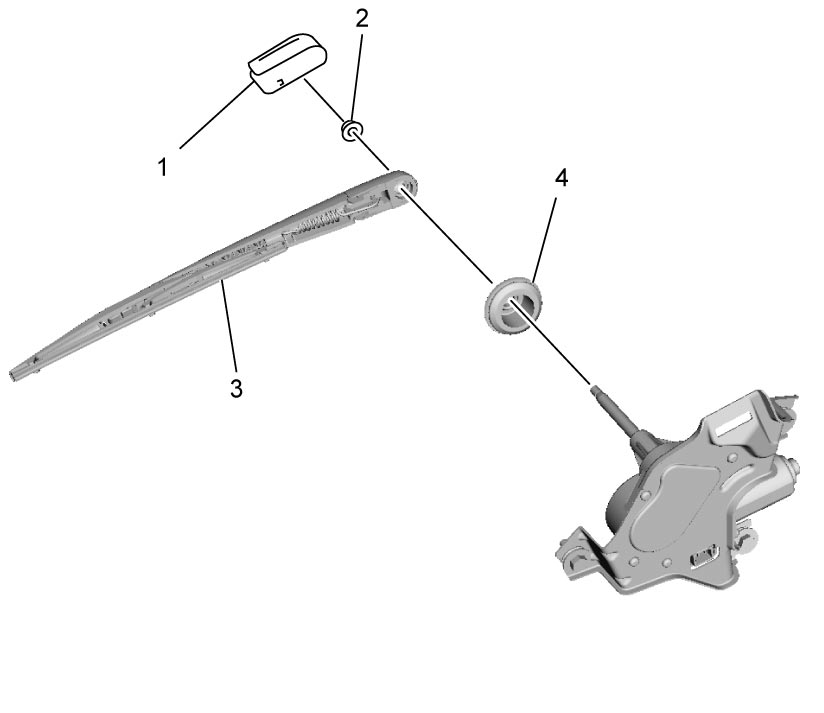
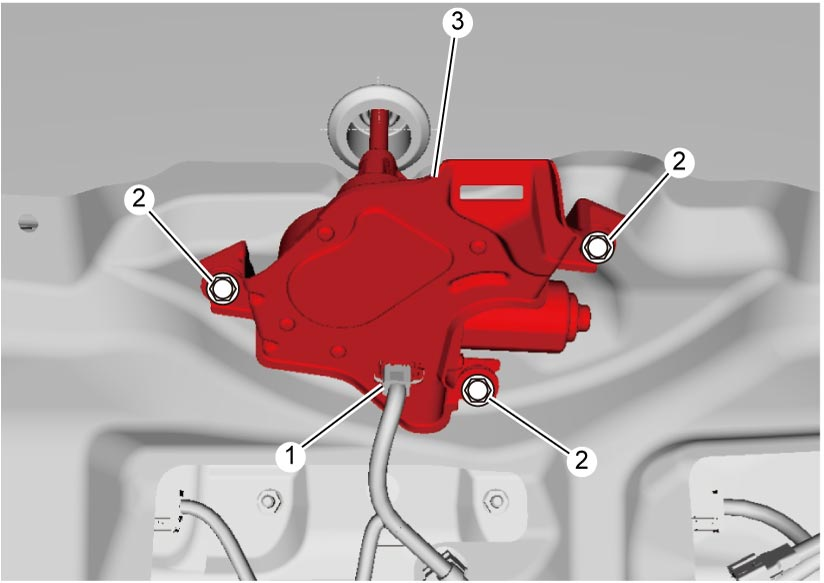
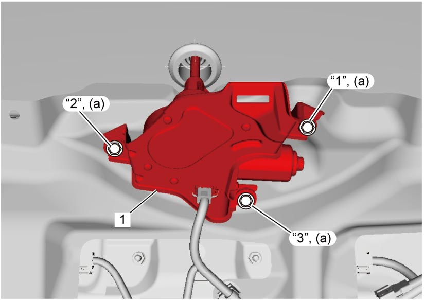
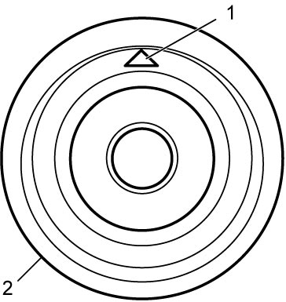
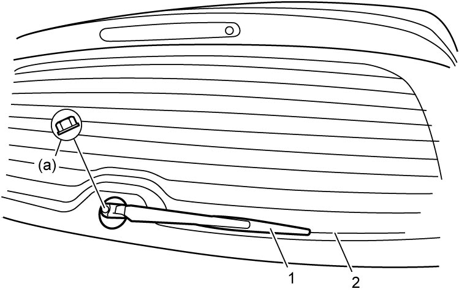

9D
| Rear Wiper Removal and Installation |
Removal
1)Remove rear wiper arm cover (1), rear wiper arm nut (2), rear wiper arm with blade assembly (3), rear wiper pivot cap (4).


 "Expand image")
2)Remove rear end door trim. 
3)Disconnect connector (1) from rear wiper motor.
4)Remove rear wiper motor bolt (2) and remove rear wiper motor (3).

 "Expand image")
Installation
Reverse removal procedure noting the following points.
•Tighten rear wiper motor bolts to specified torque.
•Install rear wiper pivot cap (2) facing matchmark (1) upward.
•Install rear wiper arms with wiper blades (1) at specified position as shown in figure, and then tighten rear wiper nut to specified torque.

 "Expand image")
| 1. | Rear wiper motor |

 "Expand image")

 "Expand image")
| 2. | Rear defogger line |